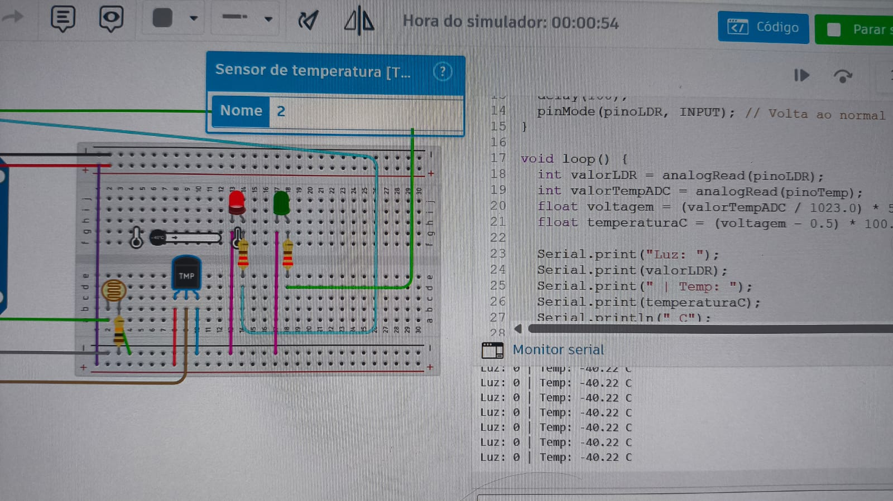
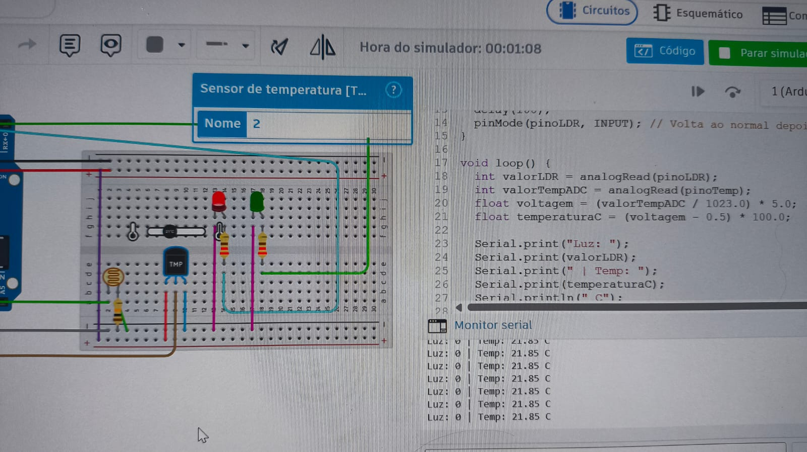
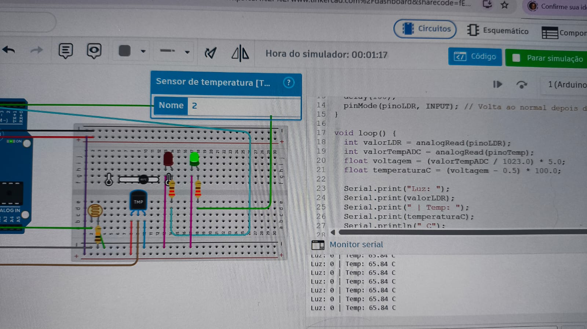

Explore a termodinâmica, a óptica e a robótica por trás do aquecimento sustentável de piscinas. Uma jornada interativa, profunda e acessível.
Sua Trilha do Conhecimento
Você explorou 0% do conteúdo. Continue navegando pelas abas!
Quiz de Fixação
Qual lei da física descreve que a potência irradiada por um corpo é proporcional à quarta potência de sua temperatura absoluta?
Física: Radiação Solar e Termodinâmica
1. O Espectro Eletromagnético Solar e Janelas Atmosféricas
O Sol emite radiação eletromagnética em um amplo espectro, mas a maior parte da energia que atinge a superfície terrestre está concentrada na faixa do visível (400-700 nm), com contribuições significativas do ultravioleta (UV) e do infravermelho próximo (IR). A atmosfera terrestre atua como um filtro seletivo: o ozônio absorve a maior parte do UV-C e UV-B nocivos, enquanto o vapor d'água e o CO₂ absorvem faixas específicas do infravermelho. As regiões do espectro que conseguem atravessar a atmosfera com pouca atenuação são chamadas de "janelas atmosféricas". Para a piscina, a janela do visível e do IR próximo é crucial, pois é onde reside a máxima densidade de energia solar capaz de penetrar na água.
2. Conservação de Energia na Superfície: A + R + T = 1
Quando um fluxo de radiação incide sobre qualquer material (como a superfície da água ou uma lona), a energia deve ser conservada. Isso é formalizado pela equação adimensional:
α + ρ + τ = 1
α (Absortância): Fração da energia incidente que é absorvida pelo material, convertendo-se em energia interna (calor). Adimensional (0 a 1).
ρ (Reflectância): Fração da energia que é "rebatida" pela superfície, retornando ao meio. Adimensional (0 a 1).
τ (Transmitância): Fração da energia que atravessa o material, continuando sua propagação no outro lado. Adimensional (0 a 1).
Aplicação à piscina: Uma lona preta fosca tem α ≈ 0,95, ρ ≈ 0,05 e τ ≈ 0. Quase toda a energia é convertida em calor na superfície da lona, que depois é transferida para a água por condução.
3. Reflexão Especular vs. Difusa e a Cor dos Corpos
A reflexão especular ocorre em superfícies lisas (como a água calma ou um espelho), onde os raios incidentes paralelos são refletidos em uma única direção, obedecendo à lei "ângulo de incidência = ângulo de reflexão". Já a reflexão difusa ocorre em superfícies microscopicamente rugosas (como concreto ou lona texturizada), espalhando a luz em todas as direções. É por isso que vemos a lona de qualquer ângulo.
Por que superfícies escuras absorvem mais? Microscopicamente, a cor que percebemos é a luz que o material reflete. Um objeto preto possui uma estrutura molecular com bandas de energia que permitem transições eletrônicas para quase todos os comprimentos de onda do espectro visível. Os fótons incidentes transferem sua energia (E = h·f) para os elétrons do material, que rapidamente decaem, liberando essa energia como vibrações da rede cristalina (fônons), ou seja, calor. A reflectância (ρ) é mínima, logo, pela conservação (A+R+T=1), a absortância (A) é máxima.
4. Leis da Radiação de Corpo Negro
Um corpo negro é um modelo físico idealizado que absorve toda a radiação incidente (α = 1) e é o emissor térmico mais eficiente possível.
Lei de Stefan-Boltzmann:
P = ε · σ · A · T⁴
Onde: P é a potência irradiada (Watts); ε é a emissividade da superfície (0 para espelho perfeito, 1 para corpo negro); σ é a constante de Stefan-Boltzmann (5,67 × 10⁻⁸ W·m⁻²·K⁻⁴); A é a área superficial (m²); T é a temperatura absoluta (Kelvin). Nota: A dependência com T⁴ significa que dobrar a temperatura aumenta a irradiação em 16 vezes!
Lei de Wien:
λ_max = b / T
Onde λ_max é o comprimento de onda de pico de emissão e b é a constante de Wien (2,898 × 10⁻³ m·K). Corpos mais quentes emitem luz em comprimentos de onda mais curtos (o Sol, a ~5800K, emite no visível; a piscina, a ~300K, emite no infravermelho longo).
Lei de Kirchhoff da Radiação: Em equilíbrio térmico, a emissividade (ε) de um corpo é igual à sua absortância (α). Um bom absorvedor é, obrigatoriamente, um bom emissor. É por isso que pintar a piscina de preto a faz aquecer rápido durante o dia, mas também perder calor rapidamente à noite se não for coberta.
Materiais e a Interação com a Piscina
1. O Vidro e o Efeito Estufa Seletivo
O vidro possui uma propriedade óptica fundamental chamada seletividade espectral. Ele é altamente transparente à radiação solar de onda curta (visível e IR próximo), permitindo que essa energia atravesse e aqueça o interior. No entanto, o vidro é opaco à radiação infravermelha de onda longa (emitida por objetos à temperatura ambiente, como a água da piscina, conforme a Lei de Wien). Quando a água absorve a luz solar e tenta reemitir essa energia como IR longo, o vidro bloqueia essa saída. A energia fica "presa", aumentando a temperatura interna. Este é o mecanismo microscópico do efeito estufa, replicado em estufas agrícolas e coberturas de piscina.
2. A Água: Por que a piscina parece azul?
A água não é incolor; ela possui faixas de absorção seletiva. As moléculas de H₂O absorvem fortemente a radiação no extremo vermelho do espectro visível e no infravermelho. Quando a luz branca do sol penetra na água, os comprimentos de onda vermelhos são absorvidos nos primeiros metros (convertendo-se em calor), enquanto os comprimentos de onda azuis sofrem menos absorção e são espalhados (espalhamento de Rayleigh e Mie) de volta aos nossos olhos. Portanto, a cor azul é a luz que não foi absorvida. Para o aquecimento, essa absorção do vermelho/IR é excelente, pois deposita a energia térmica diretamente no volume do líquido.
3. Lonas: Preta vs. Transparente vs. Branca
Lona Preta: Alta absortância (α ≈ 0,95). Aquece a própria lona rapidamente. O calor é transferido para a água por condução direta. É a mais eficiente para aquecimento direto, mas impede a passagem de luz para o fundo.
Lona Transparente (Bolhas): Alta transmitância (τ ≈ 0,85) para a luz visível. A luz atravessa a lona e é absorvida pelo fundo e pela água. A lona atua principalmente como uma barreira física, reduzindo drasticamente as perdas por evaporação (que é a maior causa de perda de calor em piscinas, pois a vaporização consome 2260 kJ/kg de calor latente) e por convecção com o vento.
Lona Branca: Alta reflectância (ρ ≈ 0,80). Reflete a maior parte da radiação solar. Não serve para aquecer, mas sim para manter a água fria em climas muito quentes, evitando o superaquecimento.
4. Balanço Energético Simplificado
A variação de temperatura da piscina é regida pelo balanço entre ganhos e perdas:
ΔE = (Ganho Solar) - (Perdas por Evaporação + Convecção + Radiação Noturna + Condução ao solo)
Uma cobertura transparente otimiza este balanço não necessariamente aumentando o "Ganho Solar" (ela pode até refletir 10% da luz), mas ao reduzir as "Perdas por Evaporação" em até 70%, o saldo líquido (ΔE) torna-se positivo e muito mais eficiente do que a água exposta.
Simuladores Interativos
Use o teclado (Tab e Enter) ou o mouse para interagir. Os resultados são anunciados para leitores de tela.
S1: Fóton na Superfície
Objetivo: Visualizar a conservação A + R + T = 1 em diferentes materiais.
Absorção (A): 0%
Reflexão (R): 0%
Transmissão (T): 0%
O que observar: Selecione um material e dispare o feixe. Observe como a soma das três barras é sempre 100%.
S2: Cobertura e Efeito Estufa
Objetivo: Comparar a temperatura ao longo de 12h com e sem cobertura.
Temperatura Final: -- °C
Pergunta para pensar: Por que a linha verde (com cobertura) mantém a temperatura mais alta mesmo após o "sol se pôr" no simulador? (Dica: pense na evaporação e na reemissão de IR).
S3: Cor que Aquece (Albedo)
Objetivo: Relacionar a cor da lona com a taxa de aquecimento.
Variação de Temperatura: +0.0 °C
Ranking de eficiência: Preta > Azul > Verde > Branca
S4: Painel Arduino Virtual (Nosso Circuito)
Objetivo: Testar a lógica do nosso código com entradas simuladas.
Frio (< 28°C)Quente (>= 28°C)
Monitor Serial:
Aguardando dados...
Cálculo em tempo real:
V = (300 / 1023) × 5 = 1.46 V
T = (1.46 - 0.5) × 100 = 96.6 °C
Robótica: O Cérebro do Aquecimento
1. Sensores e Atuadores: Conceitos Fundamentais
Um sensor é um dispositivo que converte um fenômeno físico (grandeza de entrada) em um sinal elétrico mensurável (grandeza de saída). Um atuador faz o inverso: converte um sinal elétrico de controle em uma ação física (movimento, luz, calor).
LDR (Light Dependent Resistor): É um fotorresistor. Sua resistência elétrica diminui drasticamente quando a intensidade da luz incidente aumenta (efeito fotoelétrico interno em semicondutores como o sulfeto de cádmio). No Arduino, usamos um divisor de tensão para converter essa variação de resistência em uma variação de tensão (0-5V), que o conversor Analógico-Digital (ADC) lê como um número entre 0 e 1023.
TMP36: Sensor analógico de temperatura. Possui uma saída de tensão linearmente proporcional à temperatura em Celsius. Sua fórmula de conversão é derivada de suas especificações: ele possui um offset de 0,5V (que representa 0°C) e uma sensibilidade de 10 mV/°C (0,01 V/°C). Portanto, a tensão lida (V) menos o offset (0,5), dividida pela sensibilidade (0,01), resulta na temperatura. Simplificando: T(°C) = (V - 0,5) × 100. Sua faixa operacional é de -40°C a +125°C.
ADC de 10 bits: O Arduino UNO mapeia 0V a 5V em 2¹⁰ = 1024 valores discretos (0 a 1023). Cada passo (ou "count") representa 5V / 1023 ≈ 4,88 mV.
2. Evidências do Tinkercad (Nosso Protótipo)

Fig 1: Simulação com o sensor no mínimo: o monitor serial marca −40,22 °C e o LED VERMELHO acende (temperatura < 28 °C = piscina fria, precisa aquecer).

Fig 2: Temperatura ambiente (~21 °C): serial mostra 21,85 °C; como ainda está abaixo do limiar de 28 °C, o LED VERMELHO permanece aceso.

Fig 3: Aquecimento intenso (~66 °C): serial mostra 65,84 °C; acima de 28 °C o LED VERDE acende e o vermelho apaga (piscina aquecida).
3. O Código Fonte (Explicado)
Este é o código exato carregado no nosso microcontrolador. Abaixo, a explicação do "bug do Tinkercad": em ambientes de simulação, o pino analógico pode ficar em "alta impedância" (floating), lendo ruído. Forçar um INPUT_PULLUP ativa um resistor interno que estabiliza o pino em HIGH. Após um breve delay, voltamos para INPUT para permitir a leitura analógica correta do divisor de tensão sem a interferência do pull-up.
const int pinoLDR = A0;
const int pinoTemp = A1;
const int ledVermelho = 8;
const int ledVerde = 9;
void setup() {
pinMode(ledVermelho, OUTPUT);
pinMode(ledVerde, OUTPUT);
Serial.begin(9600);
// LINHA MÁGICA QUE CORRIGE O BUG DO TINKERCAD:
pinMode(pinoLDR, INPUT_PULLUP); // Estabiliza o pino
delay(100); // Aguarda estabilização
pinMode(pinoLDR, INPUT); // Volta ao normal para leitura analógica
}
void loop() {
int valorLDR = analogRead(pinoLDR);
int valorTempADC = analogRead(pinoTemp);
// Conversão ADC para Voltagem (0-5V)
float voltagem = (valorTempADC / 1023.0) * 5.0;
// Conversão Voltagem para Temperatura (Fórmula TMP36)
float temperaturaC = (voltagem - 0.5) * 100.0;
Serial.print("Luz: ");
Serial.print(valorLDR);
Serial.print(" | Temp: ");
Serial.print(temperaturaC);
Serial.println(" C");
// Lógica de Controle dos Atuadores (LEDs)
if (temperaturaC < 28.0) {
digitalWrite(ledVermelho, HIGH); // Acende: Precisa aquecer
digitalWrite(ledVerde, LOW);
} else {
digitalWrite(ledVermelho, LOW);
digitalWrite(ledVerde, HIGH); // Acende: Temperatura ideal
}
delay(500); // Intervalo para estabilidade de leitura
}
4. Diagrama do Circuito e Proposta Futura
Nossa Proposta para a Piscina: O sistema atual é um protótipo de monitoramento. A evolução prevista inclui a substituição dos LEDs por um módulo relé. Quando o LED vermelho acenderia (T < 28°C), o relé fecharia o circuito, acionando uma bomba de circulação para passar a água por coletores solares ou ligando uma resistência de aquecimento auxiliar. Os dados seriam enviados via Wi-Fi (ESP8266) para um dashboard IoT, permitindo o histórico de temperatura em tempo real no celular.
Acessibilidade e Inclusão: A Base do Projeto
1. Contexto Legal e Dados Reais
A acessibilidade digital não é um "extra" ou um favor; é um direito humano fundamental e um requisito legal. No Brasil, a Lei Brasileira de Inclusão (LBI, Lei 13.146/2015) estabelece que é dever do Estado e da sociedade garantir o acesso à informação. O Decreto 5.296/2004 regulamenta a acessibilidade em sítios web. Além disso, a Lei 10.436/2002 reconhece a Libras como meio legal de comunicação e expressão.
Segundo o Censo do IBGE de 2022, aproximadamente 18,6 milhões de pessoas no Brasil possuem algum tipo de deficiência (visual, auditiva, motora ou intelectual). Ignorar a acessibilidade é excluir quase 10% da população de consumir conteúdo educacional.
2. Por que VLibras e Libras em um site de Física?
O widget VLibras foi integrado para fornecer um avatar de tradução automática de texto para Libras. Embora a tradução automática não seja perfeita (a estrutura sintática da Libras é diferente do Português), ela oferece uma camada crucial de compreensão para pessoas surdas. Um site educacional de Física e Robótica é, por natureza, denso em jargões. A presença do VLibras, combinada com uma redação clara (Linguagem Simples), reduz a barreira de entrada. O site está estruturado para, no futuro, receber vídeos em Libras gravados por humanos, que são o padrão-ouro de acessibilidade para surdos.
3. Dislexia, Contraste e Navegação
Fonte para Dislexia: A fonte OpenDyslexic (disponível no painel de acessibilidade) possui letras com base mais pesada e formas únicas. Isso ajuda a evitar que o cérebro de pessoas com dislexia "gire" ou confunda letras semelhantes (como 'b' e 'd' ou 'p' e 'q'), reduzindo a sobrecarga visual e a fadiga na leitura de textos longos de física.
Alto Contraste e Daltonismo: O modo de alto contraste (preto e amarelo/branco) garante uma taxa de contraste superior a 7:1, muito acima do mínimo de 4.5:1 exigido pelo WCAG 2.1 AA. Isso beneficia pessoas com baixa visão, catarata ou daltonismo. Nunca usamos apenas a cor para transmitir informação (ex: no simulador, usamos texto + cor + ícone para indicar o estado do LED).
Navegação por Teclado: Todo o site pode ser operado sem mouse. O foco é sempre visível (outline de 3px). Usuários de leitores de tela (como NVDA) podem navegar por landmarks (<main>, <nav>) e os simuladores anunciam suas mudanças de estado via aria-live="polite".
4. Conclusão: Impacto Social
Desenvolver o AQUASOL com acessibilidade nativa desde a primeira linha de código demonstra que a tecnologia educacional pode e deve ser universal. A inclusão amplia o impacto social do projeto, transformando um simples trabalho escolar em uma ferramenta de democratização do conhecimento científico.
Sobre o Projeto
Equipe e Objetivo
Objetivo: Desenvolver e documentar um sistema de aquecimento solar de piscina de baixo custo, monitorado por sensores Arduino, com foco total na divulgação científica acessível.
Equipe: [Inserir Nome 1], [Inserir Nome 2], [Inserir Nome 3].
Cronograma Resumido
Mês 1: Pesquisa teórica (Física e Acessibilidade) e compra de componentes.
Mês 2: Montagem do circuito no Tinkercad e prototipagem física.
Mês 3: Desenvolvimento do site, simuladores e testes de usabilidade com leitores de tela.
Mês 4: Apresentação final e publicação no GitHub Pages.
Referências Bibliográficas
HALLIDAY, D.; RESNICK, R.; WALKER, J. Fundamentos de Física: Óptica e Física Moderna. Vol. 4. Rio de Janeiro: LTC, 2023.
NUSSENZVEIG, H. M. Curso de Física Básica: Óptica. Vol. 4. São Paulo: Blucher, 2015.